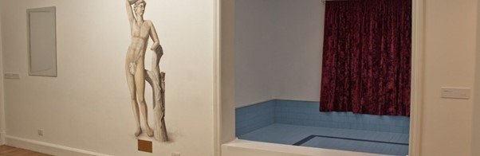
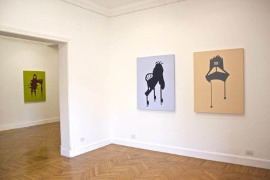
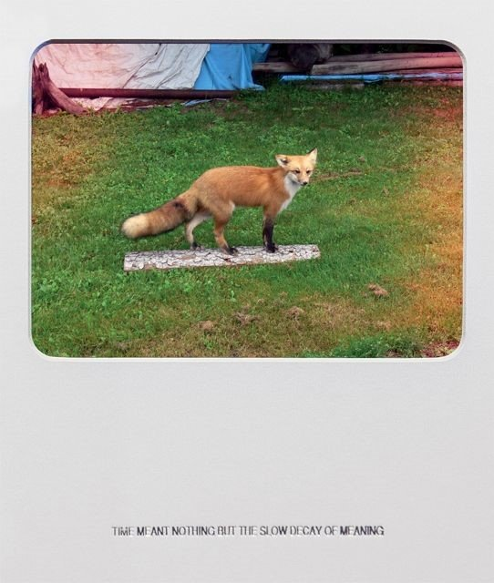
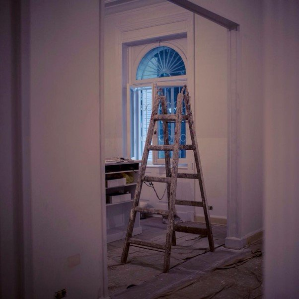

By Ismail Fayed
With nine shows for its first year, Gypsum Gallery is proving itself to be a different and perhaps alternative model to art production and dissemination in Egypt.
Although not the first private gallery in Cairo and certainly not the last, Gypsum has distinguished itself through showing and commissioning works by strictly contemporary artists from the wider Middle East region, at its gallery in Zamalek but also increasingly in art fairs abroad.

Mahmoud Khaled's exhibition at Gypsum Gallery. Courtesy: Mahmoud Khaled / Gypsum Gallery
Other commercial galleries include Mashrabia, which was established in 1990 and has recently specialized in contemporary practitioners emerging from the state-sponsored scene rather than the internationally sponsored non-profit "independent" scene. (It also gave Gypsum artist Doa Aly her first solo show.) There's also Safar Khan (established as a bookstore in 1969 and transitioning to a gallery during the 1980s), Zamalek Art Gallery, (established in 2001) and Al Masar Gallery (established in 2008). These three tend to focus on Egyptian modernist painters and sculptors. ArtTalks, established in 2010, deals in both modernist and contemporary art, but with a focus on more traditional art forms like painting and sculpture.
Gypsum's exhibitions, however, have focused on a generation of artists who rose to prominence starting in the early 2000s through non-profit spaces such as Townhouse, the Contemporary Image Collective (CIC), and the Alexandria Contemporary Arts Forum — as well as earlier shows at Mashrabia — and their counterparts from elsewhere in the region.
Gypsum's niche is therefore distinct from the usual repertoire of other private galleries, which tend to be more conventional in their curatorial choices, favor late-modernist or even modernist painters and sculptors, and are less concerned with representing their artists abroad. Perhaps the most notable difference between Gypsum and its closest competitors, Mashrabia and ArtTalks, is Gypsum's exclusive focus on contemporary art, not just by artists who were never officially affiliated with the state and its scene, but who also use and focus on the broad possibilities of contemporary visual language and style.

Mona Marzouk's exhibition at Gypsum Gallery, exploring political concerns through artistic practice
This curatorial approach, the work of Gypsum's owner and director Aleya Hamza, reflects the reality of contemporary artistic practices in Egypt — that is the bifurcation of the art scene along state-affiliated or sponsored artists and independent, often younger artists who came into their own at a time when the state was giving up its role as the sole producer and arbiter of the arts.
This reality was addressed in Gypsum itself in April last year, during a conversation between young artist Mahmoud Khaled and veteran artist Adel El-Siwi during Khaled's exhibition, A Painter on a Study Trip. Each reflected on their position as artists working in Egypt, in the here and now, while belonging to those two different camps.
The split can be traced to the rise of the neoliberal era ushered by Anwar Sadat in the early 1970s and consolidated during Hosni Mubarak's rule thanks to IMF and World Bank restructuring programs. Privatization resulted in the demise of the state as the exclusive institutional and structural setup for artistic practices, a withdrawal that created a space and a need for an independent scene to step in and provide an alternative. And where the state failed and scaled back, foreign funding found its way in through the international cultural foundations and non-Egyptian governmental institutions taking over the role of patronage.
The crucial role played by these organizations in supporting the arts cannot be overstated, but each comes with specific policy objectives and missions. These were clearly reflected in the projects and partnerships created by these institutions over the past 30 years, while also putting into question the sustainability and autonomy of the artistic practices supported.
Perhaps then the model of the private gallery that commissions new works by contemporary artists can be considered a way to address these issues around funding and the shadow of policy objectives.
Of Gypsum's nine exhibitions so far, six were by women artists (from Egypt, Kuwait, Iran or Jordan). Although not necessarily espousing a feminist position, such a diverse and expansive selection of women artists is something to celebrate at a time when the representation of women and the value of their labor occupies the forefront of feminists' struggle worldwide.
Thematically, the works have ranged widely. There were issues such as memory, displacement and the fragility of the image (Setareh Shabazi and Basim Magdy). There was work that broached the many relationships we form with the city and its history, and how they impact what we do and why we do it (Khaled and Maha Maamoun). Other works dealt with the content of images and how their materiality can be deconstructed (Ala Younis and Taha Belal), formed visceral investigations of texts and their relationships to drawing and painting (Aly and Tamara al-Samerai), or explored how profound political concerns and preoccupations can manifest in artistic practice (Mona Marzouk).

Basim Magdy's exhibition at Gypsum Gallery, exploring memory and the fragility of images
Mediums have included paintings and drawings by Aly, a photography and text series, wall painting, installation and video by Khaled, mixed-media two and three-dimensional works by Belal, and manipulated photographs and video by Magdy.
One might wonder about the points of inspiration for the artistic practices showcased — why Ovid in Aly's case, why Mark Twain for Samerai, or why Trayvon Martin for Marzouk? In showing those works, I think Hamza was trying to point out the diversity of routes through which texts and events impact art practices, sometimes in the most subtle of ways and many times by being transmuted into the work itself.
Questions then come up regarding the introduction of collecting contemporary practices on such a scale in the "independent" art scene in Egypt. The global contemporary art market has been hijacked by a speculative streak worthy of venture capitalists, which has made that market behave almost in same way they do. When a gallery like Gypsum seeks to become integrated into that market, one has to ask what kind of collecting practices will be engendered here and who might be the collectors of Egyptian contemporary art?
Commercially the gallery has been doing well for its first year, Hamza says. She has been approached by young Egyptians who are interested in less traditional commercial art, but so far they are mostly friends or people from her own social circle. The biggest sales so far have been to museums and foundations, such as San Franciso and Paris-based Kadist Foundation, New York's Whitney Museum, and Sharjah's Barjeel Art Foundation. Gypsum already participated in Art Rotterdam last year, and this year is the first Egyptian gallery to be invited to New York's Armory Show as well as the first selected to participate in ArtDubai. (Mashrabia, meanwhile, just exhibited at Arte Fiera Bologna for the first time this year.)
There can be no question that alternative modes of production have become a dire necessity for contemporary art in Egypt. There have been many debates on how private initiatives can be involved in helping this scene and its artists work beyond both the shadow of the state and international funding institutions.
There are other, artist-run alternative models in Cairo, which obviously work differently from Gypsum. Cairo Documenta, for example, consisted of two collectively organized and non-curated exhibitions — one in 2010 and one in 2012 — at the shabby, rentable downtown space known as Hotel Viennoise. Nile Sunset Annex, meanwhile, started in 2012 as an initiative by three artists to use a room in their own private Garden City residence as a space for exhibitions by various artists that are open to the public and self-funded.

Gypsum Gallery's new Garden City space. Photo: Bilo Hussein
Gypsum's model was set up by a curator who could afford to make a sizable personal investment, and who, like the Egyptian artists she shows, emerged from the "independent" scene, having previously been the curator of CIC. Until now Gypsum's space has consisted of three impeccably maintained white-painted rooms in a Zamalek apartment building, but it is currently moving to a larger, ground-floor space in Garden City.
So far, Gypsum has allowed nine artists to present their work beyond the conventional circles, but in a large, institutional space. The existing non-state-affiliated exhibiting spaces had created an audience more or less made up of individuals working in the arts or affiliated with the institutions that support these types of artistic practice (such as Goethe Institut), but Gypsum is attempting to introduce these practices to other audiences who may not be already engaged with such cultural production or the institutions that support it.
But how that model will influence the notion of the gallery itself, as well as the relationship between the art scene in Egypt and the global art market, still remains to be seen.
This review was written during Gypsum Gallery's first year of operation in 2014-2015.